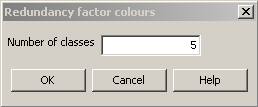

The redundancy factor colours dialog is used to choose how observations are to be coloured based on redundancy. This dialog is accessed from the Observations | Colour coding | Redundancy menu item.
The redundancy will be classified in equal sized groups from 0.0 up to a 1.0. For example if the number of groups is 5 then the redundancies will be divided into groups with ranges 0.0 to 0.2, 0.2 to 0.4, ... , 0.8 to 1.0.
The items in this dialog are:
| Number of classes | The number of redundancy classes. Valid values are 2 to 20. Entering 1 does not produce a single class — it silently falls back to 5 classes instead. |